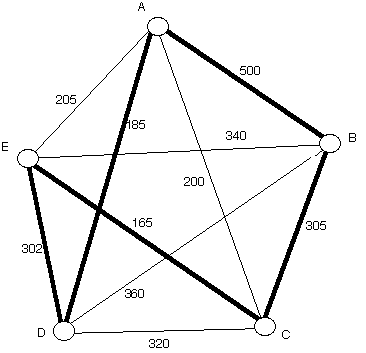
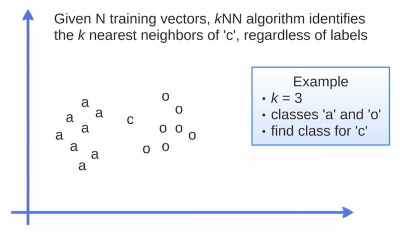

Created by Ganesh Bhosale in Dwij IT Solutions
Like this Machine Learning tutorial, our tutorials are always open for learners. Like our facebook page to get more free tutorial updates.
Machine learning is a field of computer science that gives computers the ability to learn without being explicitly programmed.
Arthur Samuel, an American pioneer in the field of computer gaming and artificial intelligence, coined the term "Machine Learning" in 1959 while at IBM.
pip install -U scikit-learnDef: Identifying to which category an object belongs to.
Applications: Spam detection, Image recognition.
Algorithms: SVM, Nearest Neighbors, Random Forest...
Visit a Node nearest to you only once. Also called greedy algorithm.
Visit a Node nearest to you only once. Also called greedy algorithm.
Classification is computed from a simple majority vote of the nearest neighbors of each point: a query point is assigned the data class which has the most representatives within the nearest neighbors of the point.
import numpy as np
import matplotlib.pyplot as plt
from matplotlib.colors import ListedColormap
from sklearn import neighbors, datasets
n_neighbors = 15
# import some data to play with
iris = datasets.load_iris()
# we only take the first two features. We could avoid this ugly
# slicing by using a two-dim dataset
X = iris.data[:, :2] # all rows x 2 columns
y = iris.target
h = .02 # step size in the mesh
# Create color maps
cmap_light = ListedColormap(['#FFAAAA', '#AAFFAA', '#AAAAFF'])
cmap_bold = ListedColormap(['#FF0000', '#00FF00', '#0000FF'])
for weights in ['uniform', 'distance']:
# we create an instance of Neighbours Classifier and fit the data.
clf = neighbors.KNeighborsClassifier(n_neighbors, weights=weights)
clf.fit(X, y)
# Plot the decision boundary. For that, we will assign a color to each
# point in the mesh [x_min, x_max]x[y_min, y_max].
x_min, x_max = X[:, 0].min() - 1, X[:, 0].max() + 1
y_min, y_max = X[:, 1].min() - 1, X[:, 1].max() + 1
xx, yy = np.meshgrid(np.arange(x_min, x_max, h),
np.arange(y_min, y_max, h))
Z = clf.predict(np.c_[xx.ravel(), yy.ravel()])
# Put the result into a color plot
Z = Z.reshape(xx.shape)
plt.figure()
plt.pcolormesh(xx, yy, Z, cmap=cmap_light)
# Plot also the training points
plt.scatter(X[:, 0], X[:, 1], c=y, cmap=cmap_bold,
edgecolor='k', s=20)
plt.xlim(xx.min(), xx.max())
plt.ylim(yy.min(), yy.max())
plt.title("3-Class classification (k = %i, weights = '%s')"
% (n_neighbors, weights))
plt.show()
sklearn.neighbors.KNeighborsClassifier(
n_neighbors=5,
weights=’uniform’,
algorithm=’auto’,
leaf_size=30,
p=2,
metric=’minkowski’,
metric_params=None,
n_jobs=1,
**kwargs)
# Standard scientific Python imports
import matplotlib.pyplot as plt
# Import datasets, classifiers and performance metrics
from sklearn import datasets, svm, metrics
# The digits dataset
digits = datasets.load_digits()
# The data that we are interested in is made of 8x8 images of digits, let's
# have a look at the first 4 images, stored in the `images` attribute of the
# dataset. If we were working from image files, we could load them using
# matplotlib.pyplot.imread. Note that each image must have the same size. For these
# images, we know which digit they represent: it is given in the 'target' of
# the dataset.
images_and_labels = list(zip(digits.images, digits.target))
for index, (image, label) in enumerate(images_and_labels[:4]):
plt.subplot(2, 4, index + 1)
plt.axis('off')
plt.imshow(image, cmap=plt.cm.gray_r, interpolation='nearest')
plt.title('Training: %i' % label)
# To apply a classifier on this data, we need to flatten the image, to
# turn the data in a (samples, feature) matrix:
n_samples = len(digits.images)
data = digits.images.reshape((n_samples, -1))
# Create a classifier: a support vector classifier
classifier = svm.SVC(gamma=0.001)
# We learn the digits on the first half of the digits
classifier.fit(data[:n_samples // 2], digits.target[:n_samples // 2])
# Now predict the value of the digit on the second half:
expected = digits.target[n_samples // 2:]
predicted = classifier.predict(data[n_samples // 2:])
print("Classification report for classifier %s:\n%s\n"
% (classifier, metrics.classification_report(expected, predicted)))
print("Confusion matrix:\n%s" % metrics.confusion_matrix(expected, predicted))
images_and_predictions = list(zip(digits.images[n_samples // 2:], predicted))
for index, (image, prediction) in enumerate(images_and_predictions[:4]):
plt.subplot(2, 4, index + 5)
plt.axis('off')
plt.imshow(image, cmap=plt.cm.gray_r, interpolation='nearest')
plt.title('Prediction: %i' % prediction)
plt.show()
Classification report for classifier SVC(C=1.0, cache_size=200,
class_weight=None, coef0=0.0, decision_function_shape='ovr',
degree=3, gamma=0.001, kernel='rbf', max_iter=-1,
probability=False, random_state=None, shrinking=True, tol=0.001,
verbose=False):
precision recall f1-score support
0 1.00 0.99 0.99 88
1 0.99 0.97 0.98 91
2 0.99 0.99 0.99 86
3 0.98 0.87 0.92 91
4 0.99 0.96 0.97 92
5 0.95 0.97 0.96 91
6 0.99 0.99 0.99 91
7 0.96 0.99 0.97 89
8 0.94 1.00 0.97 88
9 0.93 0.98 0.95 92
avg / total 0.97 0.97 0.97 899
Confusion matrix:
[[87 0 0 0 1 0 0 0 0 0]
[ 0 88 1 0 0 0 0 0 1 1]
[ 0 0 85 1 0 0 0 0 0 0]
[ 0 0 0 79 0 3 0 4 5 0]
[ 0 0 0 0 88 0 0 0 0 4]
[ 0 0 0 0 0 88 1 0 0 2]
[ 0 1 0 0 0 0 90 0 0 0]
[ 0 0 0 0 0 1 0 88 0 0]
[ 0 0 0 0 0 0 0 0 88 0]
[ 0 0 0 1 0 1 0 0 0 90]]
- Ganesh Bhosale
- Dwij IT Solutions
Did you liked this tutorial ?
Checkout more such tutorials on: http://dwij.net/tuts